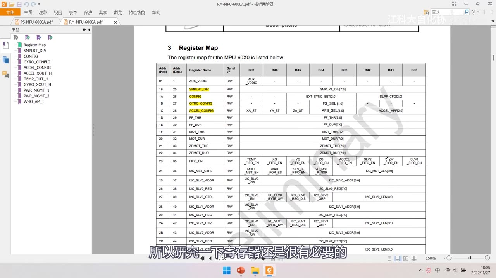
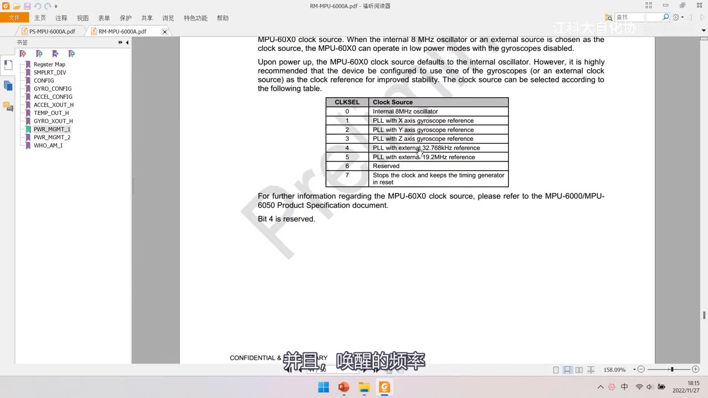

[10-2] MPU6050简介 — 学习笔记
一句话结论
MPU6050 是 6 轴姿态传感器（3 轴加速度 + 3 轴陀螺仪），16 位 ADC 量化，7 位地址 1101000 即 0x68、写 0xD0 读 0xD1。操作它就是按 I2C 读写寄存器：先清 SLEEP，再配量程与采样率。
本集定位
- 模块 10 的理论课（芯片精读），承接上集 I2C 时序，本集没写代码；软件 I2C 在 [10-3]、硬件 I2C 在 [10-4]。
- 全程 PPT + 两份 PDF 手册（产品说明书
PS-MPU-6000A-00 Rev 3.2、寄存器映像RM-MPU-6000A-00 Rev 3.2）逐页精读。 - 讲什么：6/9/10 轴、欧拉角、加速度计与陀螺仪原理、参数、电路与引脚、框图、电气特性与 I2C 时序、关键寄存器。
- 不涉及：姿态解算算法/DMP 库使用、SPI 时序细节、FIFO 用法。
- 片尾 50:12「接下来的任务就是实现 I2C 通信，读写这里的寄存器来操控 MPU6050」。

图 1：开场承接上集——PPT「I2C时序」页（指定地址读：对于指定设备、在指定地址下读取从机数据）与上集整帧波形；这样就实现了对外挂芯片寄存器的读写
1. 资料：两份手册
- 产品说明书（
PS-MPU-6000A-00，Revision 3.2，11/16/2011）：芯片是什么、有什么特性、电气参数、时序图。 - 寄存器映像手册（
RM-MPU-6000A-00，Revision 3.2）：Register Map 总表 + 每个寄存器每一位的详细解释。 - 写代码、操作硬件时寄存器描述必不可少；英文不好可用翻译软件辅助。
2. MPU6050 简介与姿态传感原理
2.1 6 轴姿态传感器
- MPU6050 是 6 轴姿态传感器：测芯片自身 X/Y/Z 三轴的加速度和角速度，经数据融合得到姿态角，常用于平衡车、飞行器。
- 组成：3 轴加速度计（Accelerometer）+ 3 轴陀螺仪（Gyroscope）；芯片上标了 XYZ 轴方向（垂直芯片表面的为 Z 轴），方向与读数的正负一一对应。
- 轴数：3 轴加速度 + 3 轴角速度 = 6 轴；再集成 3 轴磁场 → 9 轴；再加气压传感器 → 10 轴（海拔越高气压越低，可测垂直高度）。
2.2 欧拉角与偏航角
- 姿态角通常叫欧拉角：机体相对于初始三个轴的夹角，能清晰表达此刻姿态。
- 以飞机为例，机头左右转的那个轴叫偏航（Yaw），另有横滚、俯仰；本集只提偏航。
- 本集重点是 I2C 通信，姿态解算不涉及。
2.3 加速度计原理
- 机械模型：滑块两边各一根弹簧，滑块带动滑动电位器——滑块移动 → 分压变化 → 输出电压变化。
- 由牛顿第二定律 F = ma：想测加速度 a 就去测它所受的力 F（m 是滑块质量）。
- 芯片内等效：六个测力的秤组成正方体、中间放一个单位质量小球，六个面的读数就是三轴加速度。
- 静置水平：只有底面受力 → X/Y 为 0，Z 为 +1g；自由落体：三轴全 0；向左倾斜：底面和左面同时受力，可由分量算出倾角。
- 只用加速度计求倾角只在静置时正确：运动加速度（汽车突然加速、停在斜坡上）会干扰结果。
2.4 陀螺仪原理
- 机械模型：三个轴的平衡环 + 中间高速旋转的旋转轮 + 连接处的电位器。
- 角动量守恒：旋转轮有保持原有角动量的趋势，转轴方向不变，外部转动时在平衡环连接处产生角度偏差。
- 但 MPU6050 内部的陀螺仪测的是角速度，不是角度（结构/工艺差异）：可想象旋转飞椅，对向两个椅子飞起的夹角反映绕该轴的角速度。
- 角速度积分可得到角度，但误差会累积、时间长了漂移。
- 互补：加速度计是「静态稳定」、陀螺仪是「动态稳定」，实际取长补短做数据融合（静止信加速度计、运动信陀螺仪）；实际解算更复杂，本集不展开。

图 2：PPT「MPU6050简介」——可测芯片自身 X/Y/Z 的加速度与角速度、数据融合可得姿态角，常用于平衡车、飞行器；3 轴加速度计测 X/Y/Z 加速度，3 轴陀螺仪测 X/Y/Z 角速度；下方有 XYZ 轴定义、加速度计示意图（弹簧 + 电位器）、陀螺仪机械模型
3. 参数与分辨率
对比上一节学的 ADC，这里「AD 值 ↔ 物理量」同样是线性的，只是参考量变成「满量程」。
| 项目 | 数值 | 说明 |
|---|---|---|
| ADC 位数 | 16 位 | 量化输出 2 的 16 次方 = 65536 个数；有正负，所以是有符号数，范围 −32768～32767 |
| 加速度计满量程 | ±2 / ±4 / ±8 / ±16（g） | 1 g = 9.8 m/s²；运动剧烈选大量程、要精细选小量程 |
| 陀螺仪满量程 | ±250 / ±500 / ±1000 / ±2000（°/sec） | 同上 |
| 可配置项 | 数字低通滤波器、时钟源、采样分频 | 低通滤波让输出更平滑；时钟源经分频决定 AD 转换快慢 |
| 从机地址 | 1101000（AD0=0）/ 1101001（AD0=1） | 7 位地址 |
- 满量程越大分辨率越粗：选 ±16g 时 AD 最大值 32767 对应 16g，选 ±2g 时 32768 对应 2g——满量程越小越细腻，但要留够余量别超量程。
- 换算思路与 ADC 一致：物理量 = AD 值 / 满量程对应值 × 满量程；满量程对应的 AD 值越大，同样一段 AD 差值对应的物理量越小（分辨率越细）。
- 例：±2g 时 16384 LSB/g，读到 32767 约对应 +2g；换成 ±16g（2048 LSB/g）后，同样的 AD 值只代表约 +16g。
3.1 地址的两种表示（0x68 与 0xD0/0xD1）
- 7 位二进制 1101000 换算成十六进制就是 0x68，所以有的地方说「MPU6050 地址是 0x68」。
- 发送的 1 个字节里高 7 位是地址、最低位是读写位：
0x68 << 1 = 0xD0，0xD0 是写地址、0xD1 是读地址。 - 两种表示实际都用：手册多用「0x68 + 读写位」，本课程习惯用把读写位并入的 0xD0/0xD1。

图 3：PPT「MPU6050参数」——16 位 ADC 量化 −32768～32767；加速度计 ±2/±4/±8/±16 g；陀螺仪 ±250/±500/±1000/±2000 °/sec；可配低通滤波、时钟源、采样分频；地址 1101000（AD0=0）/1101001（AD0=1）
4. 硬件电路与引脚
4.1 模块原理图
- 模块上有 LDO（低压差线性稳压器）把 VCC_5V 稳成 3.3V、一个 LED 电源指示灯、SCL/SDA 各接 4.7KΩ 上拉电阻；芯片本身引脚很多，大多是最小系统里的固定连接，抄参考电路即可。
- 关键信号引到排针：VCC_5V、VCC_3V3、SCL、SDA、XDA、XCL、AD0、INT、GND；SCL/SDA 直接接 STM32 的 GPIO 即可。
- 供电：芯片 VDD 只有 2.375～3.46V，是 3.3V 器件不能直接接 5V；模块 VCC 端可接 3.3～5V，靠板上 LDO 输出 3.3V。
4.2 引脚功能表
| 引脚 | 功能 |
|---|---|
| VCC、GND | 电源 |
| SCL、SDA | I2C 通信引脚（接 STM32 的 GPIO） |
| XCL、XDA | 主机 I2C 通信引脚（MPU6050 作主机控制扩展设备） |
| AD0 | 从机地址最低位（板上默认弱下拉到 GND） |
| INT | 中断信号输出 |
- XCL/XDA 用途：6 轴融合的偏航角 Yaw 会漂移、无法用加速度计纠正（像坐车不看窗外），可外接磁力计当指南针；定高时还可外接气压计。
- 扩展数据可读进 MPU6050、由内部 DMP 做融合与解算；不需要解算时，也可把磁力计/气压计直接挂到同一条 I2C 总线上。
- AD0：电路默认弱下拉到低电平，悬空时地址就是 1101000（0x68），拉高变 1101001；它改的是 I2C 寻址地址，不影响 WHO_AM_I 的值。
- INT：数据就绪、自由落体检测、运动检测、零运动检测等事件都能让它产生电平跳变；不需要的话这个引脚也可以不接（中断配置后面再讲）。

图 4：PPT「硬件电路」——左侧模块原理图（3.3V LDO、LED 电源灯、SCL/SDA 各 4.7K 上拉、MPU-6050 与 J1/J2 排针）；右侧引脚表：VCC/GND 电源、SCL/SDA I2C 通信、XCL/XDA 主机 I2C、AD0 地址最低位、INT 中断输出
5. 内部框图
- 时钟：CLKIN / CLKOUT（一般用内部时钟，模块里 CLKIN 接 GND、CLKOUT 不引出）。
- 传感器：X/Y/Z 加速度计、X/Y/Z 陀螺仪各带 Self test，信号经 ADC 进 Sensor Registers；Temp Sensor 同样经 ADC；Charge Pump（CPOUT 需外接电容）给陀螺仪升压。
- 数字部分：Config Registers、Interrupt Status Register → INT、FIFO（缓存数据流，本集不用）、Factory Calibration。
- 从机接口：Slave I2C and SPI Serial Interface 与 STM32 通信（MPU-6000 支持 SPI + I2C，MPU-6050 仅 I2C）。
- 主机接口：Master I2C Serial Interface + Serial Interface Bypass Mux——旁路拨一边时辅助 I2C 直接并入主总线（STM32 可直接访问所有设备），拨另一边由 MPU6050 控制。
- 图上还有 CLKIN/CLKOUT → CLOCK 的时钟通路与 FSYNC（帧同步）。
- DMP（Digital Motion Processor）：硬件姿态解算，配合官方 DMP 库更方便（本集只介绍）。
- Bias & LDO：偏置与稳压（VLOGIC/REGOUT 等引脚）。
5.1 传感器本质与 ADC 全自动转换
- 这些传感器本质都相当于可变电阻：物理量变化 → 电阻变化 → 分压输出模拟电压 → ADC 量化。
- 芯片内部转换全自动，类似「AD 连续转换 + DMA 转运」，不用手动启动/搬运，也不存在数据覆盖问题。
5.2 自测（Self test）
- 每个传感器都有自测单元，用来验证芯片好坏。
- 做法：先使能自测读一次数据，再失能自测读一次，两者相减得「自测响应」；落在手册给定范围内就说明芯片没问题。
5.3 电荷泵（升压）
- 电荷泵是升压电路（OLED 模块里也有），CPOUT 引脚需外接电容。
- 原理：先让电池与电容并联充电，再改成串联——电池 5V + 电容 5V → 输出 10V；电容电荷少，要趁没放完电及时补电，后面再加滤波。
- 陀螺仪内部需要升压，所以框图里有 CPOUT。

图 5：PPT「MPU6050框图」——Accel 与 Gyro 各带 Self test → ADC → Sensor Registers；Temp Sensor → ADC；Charge Pump（CPOUT）；Interrupt Status → INT；FIFO；Config Registers；Slave/Master I2C 接口；DMP；Bias & LDO

图 6：同一页上的红笔——画了「电池 + 电容 + 5V」示意，讲电荷泵先并联充电、再改串联升压
6. 产品说明书要点
6.1 概述与型号差异
- 芯片是 3 轴 MEMS 陀螺仪 + 3 轴 MEMS 加速度计，内置 DMP。
- MPU-6000 支持 SPI + I2C，MPU-6050 仅支持 I2C（引脚上也有差异）。
- 特性列表里还有 9 轴运动融合（配合扩展磁力计）等内容，本集不深入。
6.2 电气特性（6.3 节）
- VDD = 2.375 ～ 3.46V（VLOGIC 仅 MPU-6050 有，为 1.8V ±5% 或 VDD）；超出供电范围芯片可能无法正常工作。
- 温度传感器：范围 −40 ～ +85 ℃、灵敏度 340 LSB/℃、零点偏移 −521 LSB、线性度 ±1℃。
- 各工作模式电流：陀螺 + 加速度 + DMP 约 3.9mA。
- 绝对最大额定值 VDD −0.5 ～ +6V，超过 6V 就会损坏。

图 7：产品说明书 6.3 电气特性表（Rev 3.2、13 of 57）——VDD = 2.375V～3.46V、VLOGIC = 1.8V±5% 或 VDD；温度传感器 −40～+85℃、灵敏度 340 LSB/℃、Offset −521 LSB、Linearity ±1℃；各模式电流 3.9mA 等
6.3 I2C 通信时序表
- Single-Byte Write：Master
S + AD+W + RA + DATA + P；Slave 在AD+W、RA、DATA之后各回一个ACK。 - Burst Write：
S→AD+W→RA→DATA→DATA→ … →P，每个 DATA 后都有 ACK，从机寄存器地址自动递增，一次写多个连续寄存器效率更高。 - 指定地址读：先写地址（
S+AD+W+RA），再重复起始转读，最后一个数据给非应答再停止——与上集 PPT 一致。 - 时序特性表给出 SCL 上限、上升/下降沿时间等；I2C 是同步时序，对时间要求不严，速率慢点芯片也能跟上，SPI 时序部分本集跳过。

图 8：产品说明书 I2C 写时序——正文说 master 发 S、地址加写位 0、RA、数据、P；Single-Byte Write Sequence（Master：S、AD+W、RA、DATA、P；Slave：ACK、ACK、ACK）与 Burst Write Sequence（Slave：ACK×4）；页脚 38 of 57
7. 寄存器（寄存器映像手册精读）
STM32 有库函数封装，这颗芯片则要自己研究寄存器。手册开头是 Register Map 总表，之后是每个寄存器每一页的详细说明；每个寄存器都是 8 位。
7.1 Register Map 总表
- 列：Addr(Hex) / Addr(Dec) / Register Name / Serial I/F / Bit7 ～ Bit0。
- 前半段：0x19/25
SMPLRT_DIV、0x1A/26CONFIG、0x1B/27GYRO_CONFIG、0x1C/28ACCEL_CONFIG、0x1D/29FF_THR、0x1E/30FF_DUR、0x1F/31MOT_THR、0x20/32MOT_DUR、0x21/33ZRMOT_THR、0x22/34ZRMOT_DUR、0x23/35FIFO_EN、0x24/36I2C_MST_CTRL、0x25/37I2C_SLV0_ADDR… 0x2C/44I2C_SLV2_REG。 - 后半段：0x69/105
MOT_DETECT_CTRL、0x6A/106USER_CTRL、0x6B/107PWR_MGMT_1、0x6C/108PWR_MGMT_2、0x72/114FIFO_COUNTH、0x73/115FIFO_COUNTL、0x74/116FIFO_R_W、0x75/117WHO_AM_I。 _H/_L后缀表示内部寄存器值的高字节 / 低字节（如 ACCEL_XOUT_H 是 16 位 X 轴加速度的最高 8 位）。- 注意：本集画面里的总表只截到前半段与后半段，数据寄存器段（如 ACCEL_XOUT_H 那一组）地址没出现在画面中，需要时以寄存器映像手册为准。

图 9：寄存器映像手册「3 Register Map」总表——列 Addr(Hex)/Addr(Dec)/Register Name/Serial I/F/Bit7～Bit0；可见 0x01 AUX_VDDIO、0x19 SMPLRT_DIV（黄色）、0x1A CONFIG、0x1B GYRO_CONFIG、0x1C ACCEL_CONFIG、0x1D～0x2C 等
7.2 SMPLRT_DIV（采样率分频，0x19 / 25，读写）
- 公式：
Sample Rate = 陀螺仪输出率 / (1 + SMPLRT_DIV)，采样率由陀螺仪输出时钟除以「1 + 分频值」得到。 - 陀螺仪输出率：DLPF 关闭时 8kHz、开启时 1kHz；加速度计输出率固定 1kHz（采样率高于 1kHz 时，同一加速度采样可能重复输出到 FIFO/DMP/传感器寄存器）。
- 这里的「时钟」就是 PWR_MGMT_1 里选的时钟源（手册这页直接以陀螺仪晶振举例）。

图 10：手册「4.2 Register 25 – SMPLRT_DIV」——Read/Write，Register(Hex) 19 / Decimal 25；正文给出 Sample Rate = Gyroscope Output Rate / (1 + SMPLRT_DIV)，输出率 8kHz/1kHz
7.3 CONFIG（0x1A / 26，读写）
- 内容：EXT_SYNC_SET[2:0] 外部同步 + DLPF_CFG[2:0] 数字低通滤波配置。
- 低通滤波让输出数据更平滑（抖动太厉害就开）；它开/关还会影响陀螺仪输出率（1kHz/8kHz）。具体档位表本集没有逐档念，需要时查手册。
7.4 GYRO_CONFIG（0x1B / 27，读写）
- 位：XG_ST / YG_ST / ZG_ST（三轴陀螺自测位）+ FS_SEL[1:0]（满量程），Bit2～Bit0 保留。
- 自测响应：
Self-test response = 使能自测时的传感器输出 − 不使能自测时的传感器输出，落在手册电气特性表给的范围算通过；自测只做检查，平时不使能。
| FS_SEL | 满量程 |
|---|---|
| 0 | ±250 °/s |
| 1 | ±500 °/s |
| 2 | ±1000 °/s |
| 3 | ±2000 °/s |

图 11：手册 GYRO_CONFIG（Register Hex 1B / Decimal 27）——位为 XG_ST、YG_ST、ZG_ST、FS_SEL 的 1:0 位；FS_SEL 表：0=±250 °/s、1=±500 °/s、2=±1000 °/s、3=±2000 °/s；Bits 2 through 0 reserved
7.5 ACCEL_CONFIG（0x1C / 28，读写）与加速度数据寄存器
- 位：XA_ST / YA_ST / ZA_ST（三轴加速度自测位）+ AFS_SEL[1:0]（满量程）+ ACCEL_HPF[2:0]（高通滤波，手册另给了档位表）。
| AFS_SEL | 满量程 | 灵敏度 |
|---|---|---|
| 0 | ±2 g | 16384 LSB/mg |
| 1 | ±4 g | 8192 LSB/mg |
| 2 | ±8 g | 4096 LSB/mg |
| 3 | ±16 g | 2048 LSB/mg |
- 数据寄存器：ACCEL_XOUT / YOUT / ZOUT 都是 16 位、二进制补码，高字节
_H+ 低字节_L；读的时候先读_H再读_L，高 8 位左移 8 位再或上低 8 位，存进 int16 就得到有符号值。 - 温度传感器数据同理；内部与用户各有一套寄存器集（双缓冲），保证一次突发读取拿到同一采样时刻的数据。

图 12：手册加速度数据寄存器页——AFS_SEL 表：0=±2g/16384 LSB/mg、1=±4g/8192 LSB/mg、2=±8g/4096 LSB/mg、3=±16g/2048 LSB/mg；ACCEL_XOUT/YOUT/ZOUT 都是 16-bit 2's complement value
7.6 PWR_MGMT_1（电源管理 1，0x6B / 107，读写）
- 位：DEVICE_RESET（写 1 把所有寄存器复位成默认值，之后要重新配置）、SLEEP、CYCLE、TEMP_DIS（禁用内部温度传感器）、CLKSEL[2:0]。
- SLEEP = 1 → 低功耗睡眠；CYCLE = 1 且 SLEEP 关闭 → Cycle Mode（睡眠/唤醒交替，按 LP_WAKE_CTRL 的频率唤醒采样），比较省电。
| CLKSEL | 时钟源 |
|---|---|
| 0 | 内部 8MHz 振荡器（上电默认） |
| 1 | PLL with X axis gyroscope reference |
| 2 | PLL with Y axis gyroscope reference |
| 3 | PLL with Z axis gyroscope reference |
| 4 | PLL with external 32.768kHz reference |
| 5 | PLL with external 19.2MHz reference |
| 6 | Reserved |
| 7 | Stops the clock and keeps the timing generator in reset |
- 手册原话：上电默认用内部 8M 振荡器，但「强烈建议」改用某个陀螺仪（或外部时钟）作参考以提高稳定性，因为陀螺仪晶振更精确（如 4=外部 32.768kHz、5=外部 19.2M）。

图 13：手册 PWR_MGMT_1 页的 CLKSEL 表——0=Internal 8MHz oscillator、1/2/3=PLL with X/Y/Z gyroscope reference、4=PLL with external 32.768kHz、5=PLL with external 19.2MHz、6=Reserved、7=Stops the clock

图 14：同一页的描述段——SLEEP 置 1 进低功耗睡眠；CYCLE 置 1 且 SLEEP 关闭进 Cycle Mode（在睡眠与唤醒之间循环，按 LP_WAKE_CTRL 频率唤醒采样）；时钟源可选内部 8MHz/陀螺时钟/外部时钟
7.7 PWR_MGMT_2（电源管理 2，0x6C / 108，读写）
- 位：LP_WAKE_CTRL[1:0]（低功耗唤醒频率）+ STBY_XA / STBY_YA / STBY_ZA / STBY_XG / STBY_YG / STBY_ZG（各轴待机位）。
| LP_WAKE_CTRL | 唤醒频率 |
|---|---|
| 0 | 1.25 Hz |
| 1 | 2.5 Hz |
| 2 | 5 Hz |
| 3 | 10Hz |
- STBY_x 位置 1 就让对应轴进入待机；若某陀螺轴正被用作时钟源、又被置待机，时钟源会自动切回内部 8MHz 振荡器。

图 15：手册 PWR_MGMT_2 页——LP_WAKE_CTRL 表：0=1.25 Hz、1=2.5 Hz、2=5 Hz、3=10 Hz；STBY_XA/YA/ZA/XG/YG/ZG 置 1 分别让 X/Y/Z 加速度计、X/Y/Z 陀螺仪进入待机
7.8 WHO_AM_I（0x75 / 117，只读）与复位值
- WHO_AM_I 只读、地址不可改：ID 号中间 6 位固定为 110100，最高位和最低位都是 0，所以读出来固定是 0x68；用 AD0 改地址也不影响它。
- 手册注释：除 Register 107（PWR_MGMT_1）复位值 0x40、Register 117（WHO_AM_I）复位值 0x68 外，其余寄存器复位值都是 0x00。
- 由此推出：PWR_MGMT_1 复位值 0x40 = 0100 0000，次高位 SLEEP = 1，所以芯片上电默认处于睡眠模式，操作其它寄存器前必须先清 SLEEP。

图 16：寄存器总表后半段 + 复位值注释——0x69/105 MOT_DETECT_CTRL、0x6A/106 USER_CTRL、0x6B/107 PWR_MGMT_1、0x6C/108 PWR_MGMT_2、0x72/114～0x75/117 FIFO 与 WHO_AM_I；注释「Reset value is 0x00 for all registers other than 107: 0x40 / 117: 0x68」
坑与易错点
- MPU6050 的陀螺仪测的是角速度不是角度，要积分且会漂移，这正是要和加速度计融合的原因。
- 只用加速度计算倾角只在静止时准，运动加速度（汽车加速、斜坡停车）会让结果跑偏。
- 满量程别设太小会削顶，也别太大：±16g 时 2048 LSB/g，±2g 时 16384 LSB/g。
- 地址两种表示别混：7 位地址 0x68；发字节用 0xD0（写）/0xD1（读），把 0x68 直接当发送字节就错了。
- AD0 默认弱下拉到 GND，悬空时地址是 0x68，拉高变 0x69（1101001）。
- VDD 不能接 5V：芯片只 2.375～3.46V、绝对最大 6V；模块能接 5V 是靠板上 3.3V LDO。
- SCL/SDA 接 GPIO 并配开漏，模块已带 4.7K 上拉，不是推挽。
- 上电默认 SLEEP（PWR_MGMT_1 复位值 0x40），不清 SLEEP 就操作其它寄存器无效。
- CLKSEL 建议改成陀螺仪 PLL，手册明确「强烈建议」，默认内部 8MHz 不够稳。
- 数据寄存器是 16 位补码，必须
_H左移 8 位或_L再存进 int16，直接拼 uint16 会把负值读成很大的正数。 - 加速度灵敏度单位是 LSB/mg，16384 LSB/mg 的「mg」是毫 g，换算数据时注意。
- 温度传感器不是主用途：−40～+85℃、340 LSB/℃、偏移 −521 LSB；本集没给完整换算公式。
- DMP/FIFO/XCL·XDA 本集都没用到：FIFO「本节暂时不用」，DMP 只介绍，XCL/XDA 只讲用途。
- 寄存器地址以手册为准：本集画面里的总表只截到部分地址段，写代码时按寄存器映像手册核对。